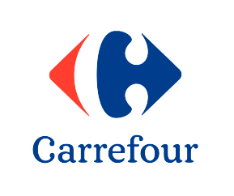
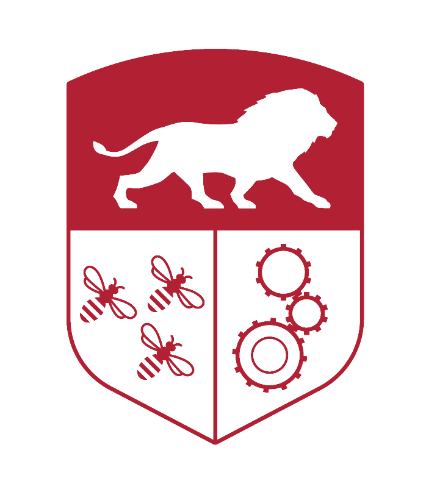

EXPERIENCES
EXPÉRIENCES
Throughout my academic journey at École Centrale de Lyon, I have gained diverse and valuable professional experience in the energy sector. My internships have significantly enhanced my expertise in power systems, data analysis, and optimization techniques. At CORESO, during a six-month internship, I contributed to testing an optimization algorithm for electrical grid defenses and performed security analyses at the European level. Previously, at EDF SEI, I spent five months developing decision-support tools for network optimization, particularly focusing on load shedding plans. Additionally, my experience at RTE allowed me to work on automating electrical security analyses and optimizing calculation performance.
Tout au long de mon parcours académique à l'École Centrale de Lyon, j'ai acquis une expérience professionnelle diversifiée et précieuse dans le secteur de l'énergie. Mes stages m'ont permis de développer significativement mon expertise en systèmes électriques, analyse de données et techniques d'optimisation. Chez CORESO, lors d'un stage de six mois, j'ai contribué aux tests d'un algorithme d'optimisation des parades électriques et réalisé des analyses de sécurité au niveau européen. Auparavant, chez EDF SEI, j'ai passé cinq mois à développer des outils d'aide à la décision pour l'optimisation du réseau, en particulier sur les plans de délestage. De plus, mon expérience chez RTE m'a permis de travailler sur l'automatisation des analyses de sécurité électrique et l'optimisation des performances des calculs.
6-month Internship - RTE
Study of electrical losses reduction and analysis of the relationship between Joule losses in the French transmission network and cross-border exchanges.
April 2025 - September 2025Stage de 6 mois - RTE
Étude de la réduction des pertes électriques et analyse du lien entre les pertes Joule sur le réseau de transport français et les échanges aux frontières.
Avril 2025 - Septembre 20256-month Internship - CORESO
Testing an optimization algorithm for remedial actions. Electrical security analyses at the European level.
January 2024 - June 2024Stage de 6 mois - CORESO
Tests d'un algorithme d'optimisation pour les actions correctives. Analyses de sécurité électrique au niveau européen.
Janvier 2024 - Juin 20245-month Internship - EDF SEI
Development of decision support tools, data visualization, and optimization of the electrical grid.
August 2023 - December 2023Stage de 5 mois - EDF SEI
Développement d'outils d'aide à la décision, visualisation de données, et optimisation du réseau électrique.
Août 2023 - Décembre 2023
1-month Internship - Carrefour
Head of the drive-through service at a supermarket
July 2022 - August 2022Stage de 1 mois - Carrefour
Responsable du service drive d'un supermarché
Juillet 2022 - Août 2022
President of the sailing club - Centrale Lyon
Management of the club, organization of events, and training of new members.
2022 - 2023Président du club de voile - Centrale Lyon
Gestion du club, organisation d'événements, et formation des nouveaux membres.
2022 - 2023
Sailing instructor - FFV
Training of young and old sailors, organization of regattas, and maintenance of the boats.
since 2019Moniteur de voile - FFV
Formation des jeunes et moins jeunes navigateurs, organisation de régates, et entretien des bateaux.
depuis 2019My Projects
Mes Projets
Here are some of the projects I have worked on during my studies. These projects have allowed me to develop my skills in various fields such as data science,business intelligence, web development and signal processing, among others.
Voici quelques-uns des projets sur lesquels j'ai travaillé durant mes études. Ces projets m'ont permis de développer mes compétences dans divers domaines tels que la data science, la business intelligence, le développement web et le traitement du signal, entre autres.
Sundao Project
Projet Sundao
This project, which was a 1st year project, aims to develop a business model around an java/kotlin application that allows users to connect each other and share cultural and sport activities.
Ce projet, qui était un projet de 1ère année, vise à développer un modèle économique autour d'une application java/kotlin qui permet aux utilisateurs de se connecter entre eux et de partager des activités culturelles et sportives.
Echoblé Project
Projet Echoblé
This project, commissioned by a French agricultural insurance company, aims to develop an innovative, non-intrusive solution for predicting farm production. Accurate crop yield forecasts enable farmers to make informed production and financial decisions, secure better terms in forward contracts, and confidently commit to delivering specific quantities of produce at predetermined prices.
Ce projet, commandé par une compagnie d'assurance agricole française (Groupama), vise à développer une solution innovante et non intrusive pour prédire la production agricole. Des prévisions précises de rendement des cultures permettent aux agriculteurs de prendre des décisions de production et financières éclairées, de sécuriser de meilleures conditions sur les contrats à terme, et de s'engager en toute confiance à livrer des quantités spécifiques de produits à des prix prédéterminés.
Fleety tracker
Fleety tracker
This project is a personal project that aims to develop a web application that allows users to track their fleet of boats. I wanted to code this project to both improve my skills and connect easier skippers and owners of boats with potential crew members as skippers always need crew members and vice versa. The application initially track the position of the "Yacht Club Classique" boats
Ce projet est un projet personnel qui vise à développer une application web qui permet aux utilisateurs de suivre leur flotte de bateaux. J'ai voulu coder ce projet à la fois pour améliorer mes compétences et pour connecter plus facilement les skippers/les propriétaires de bateaux avec des membres d'équipage potentiels. En effet, les skippers ont toujours besoin de membres d'équipage et vice versa. L'application suit initialement la position des bateaux du "Yacht Club Classique"
CONTACT ME
ME CONTACTER
I hope you enjoyed your visit to my website. If you have any questions or would like to contact me, please fill out the form below.
I will get back to you as soon as possible.
You can also contact me via my social networks or download my CV or sending a mail to pcaupro@gmail.com.
J'espère que vous avez apprécié votre visite sur mon site web. Si vous avez des questions ou si vous souhaitez me contacter, veuillez remplir le formulaire ci-dessous.
Je vous répondrai dès que possible.
Vous pouvez également me contacter via mes réseaux sociaux ou télécharger mon CV ou en envoyant un mail à pcaupro@gmail.com.